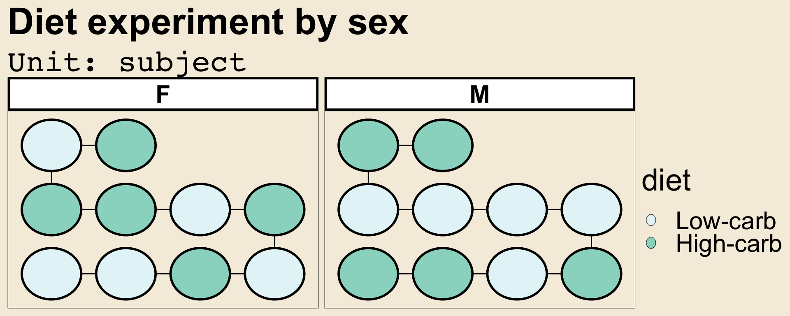

Automated Visualisation of Experimental Designs
Emi Tanaka, 
Biological Data Science Institute, Australian National University
Research School of Finance, Actuarial Studies and Statistics, Australian National University

The Grammar of Experimental Designs
- A computational framework that treats experimental design as an object that is declaratively defined by a series of composable functions.
-
Implemented in the
edibbleR-package.
- The final output is an experimental design table (or tibble).
Completely Randomised Design
- Suppose we have an experiment to compare high-carb and low-carb diets on the weight.
- We can gather twenty subjects in total.
Randomised Complete Block Design
- We may recognise that sex is an influencing factor on the response.
- We may choose to block subjects by sex.
- We assign equal number of subjects for each sex.
rcbdx <- design("Diet experiment by sex") %>%
set_units(sex = c("F", "M"),
subject = 20) %>%
allot_units(sex ~ subject) %>%
assign_units("systematic") %>%
set_trts(diet = c("Low-carb", "High-carb")) %>%
allot_trts(diet ~ subject) %>%
assign_trts("random", seed = 2023)- At this stage, the edibble design object is in a network form (a pair of directed acyclic graphs).
- The same unit structure can alternatively be defined as below.
Split-Plot Design
- The experimenter may wish to also see the effect of exercise in addition to the diet.
- The treatment structure is then \(2\times 2\) factorial.
- The experimenter has a constraint on allocation of exercise – it has to be done by session, which comprises of five subjects of one sex.
- Different diets can be assigned to each subject.
- The experimenter conducts two sessions for each sex.
- This constraint in the allocation of treatment results in a split-plot design.
spd <- design("Diet & exercise experiment") %>%
set_units(sex = c("F", "M"),
session = nested_in(sex, 2),
subject = nested_in(session, 5)) %>%
set_trts(diet = c("Low-carb", "High-carb"),
exercise = c("Intense", "Light")) %>%
allot_trts(diet ~ subject,
exercise ~ session) %>%
assign_trts("random", seed = 2023) %>%
serve_table()- The output here is in the tabular form.

Visualising Experimental Designs
- We leverage the structure that is already specified in an edibble design object.
-
Implemented in the
deggustR-package.
- To degust is to savor appreciatively.
- To deggust is to visualise edibble design objects appreciatively.
- The final output is a design of experiments as a ggplot object.
Visualise your edibble design using only one command:
autoplot()
Randomised Complete Block Design
- Customise using
ggplot2functions!

See More
edibbleanddeggustR-packages are available on CRAN or get the latest development at emitanaka/edibble and emitanaka/deggust.- Find the HTML version of this poster at https://emitanaka.org/JSM2023poster.
- For more information and references, see https://emitanaka.org/research/edibble-design.
Acknowledgement
This poster was made using posterdown R-package.